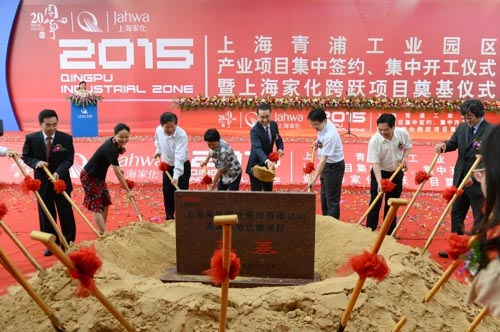

上海家化青浦新生产基地正式动工
9月22日，上海家化跨跃项目即青浦基地迁建项目奠基仪式在青浦隆重举行。青浦区委书记赵惠琴、区长夏科家、副区长朱明福、倪向军，青浦工业园区发展（集团）有限公司董事长于海平、总经理沈金华、监事会主席张新建以及上海家化联合股份有限公司董事长兼总经理谢文坚等领导和嘉宾共同出席该活动。奠基仪式的举行标志着上海家化位于青浦新生产基地的建设正式启动。
2014年2月，上海家化收到青浦区徐泾镇人民政府通知，现有中央工厂及所占土地将被征收，为了支持青浦区城市建设的总体规划，同时实现生产制造能力的跨跃与综合制造效益的提高，上海家化主动化工厂拆迁的挑战为提升生产制造能力的机遇，制定了全新的生产基地投资建设规划。项目通过股东大会审议批准后，上海家化严格遵照公司章程以及有关规范进行公开透明的招投标，经过一系列严谨的调研和论证，在完成相关报建审批手续后，项目如期进入实质性建设阶段。
据悉，上海家化新的生产基地仍选址在青浦，项目总投资13.5亿元，总占地面积209.5亩，约为现有中央工厂的2倍，将于2017年底投产运营，目标是建设成为行业内领先的日化产品生产基地。新生产基地将引进国际领先的生产技术、设备、自动控制系统及生产信息化管理系统，在技术和管理上大幅提高生产综合效益。
上海家化联合股份有限公司项目资深总监即该项目总负责人杨学干表示，该项目建造的不是一个普通的工厂，而是一个“行业领先”的日化产品生产基地，新生产基地的建造是家化发展过程中新的里程碑，对行业的技术发展也将起到积极的促进作用。带着这个使命，项目组邀请了国际知名咨询公司为家化规划了新生产基地的产能和布局方案，并协同在工业设计方面业界领先的第三方公司，进行了广泛研究和探索，规划并确定了先进的生产工艺，引入了MES、LEED、GMPC等前沿理念，在项目中实施。
上海家化联合股份有限公司董事长兼总经理谢文坚表示，制造业是经济结构调整和产业转型升级的主战场，在国家深入推进制造业做大做强的宏观背景下，上海家化积极推动生产制造能力升级，新生产基地可充分优化家化现有的供应链生产布局，提高产品生产品质，实现生产能力的整体跨跃。新生产基地将不仅是家化新的竞争优势之一，也有望成为日化行业中国先进制造业的代表。

关于上海家化
上海家化联合股份有限公司(以下简称“上海家化”)是中国历史Z悠久的日化企业之一，前身是成立于1898年的香港广生行，历经百年发展，于2001年在上海股票交易所上市。上海家化高度重视自主品牌建设，旗下拥有“佰草集”、“六神”、“高夫”、“启初”等诸多中国著名品牌，面对中国市场上的激烈竞争，家化通过采取差异化的品牌经营战略取得了不俗的成果，在众多细分市场上建立了领导地位。
上海家化取得了多方认可的经营成果，营业收入从2004年的16.7亿元增长至2014年的53.35亿元，大幅提升了经济实力。
上海家化高度重视自主创新，拥有国家标准科研中心和国家标准工业设计中心，吸纳了200多名各学科人才，并与国内外尖端科研机构开展多方面战略合作，每年对科研的投入持续增长，研发成果和专利申请数量居于国内行业领先水平，在中草药个人护理领域居于全球领先地位。
上海家化高度重视质量管理，拥有国内同行中领先的生产能力，产品涵盖护肤、彩妆、香氛、家用等多个领域，在化妆品行业中率先通过质量管理体系国际标准ISO9001的认证，是中国化妆品行业诸多国家标准的参与制定者之一，并于2012年顺利通过GMP认证。
上海家化以国际视野始终走在中国日化行业的前沿，其战略目标是将自身建设成为国际一流的伟大企业，持续创造新价值，不断回馈顾客、员工、股东和社会；企业文化是公开透明、奖惩分明、勇于创新、客户满意、诚实进取、互助友爱。唯有如此，公司才能实现自己的使命——帮助人们生活得更加美丽、健康、自信。